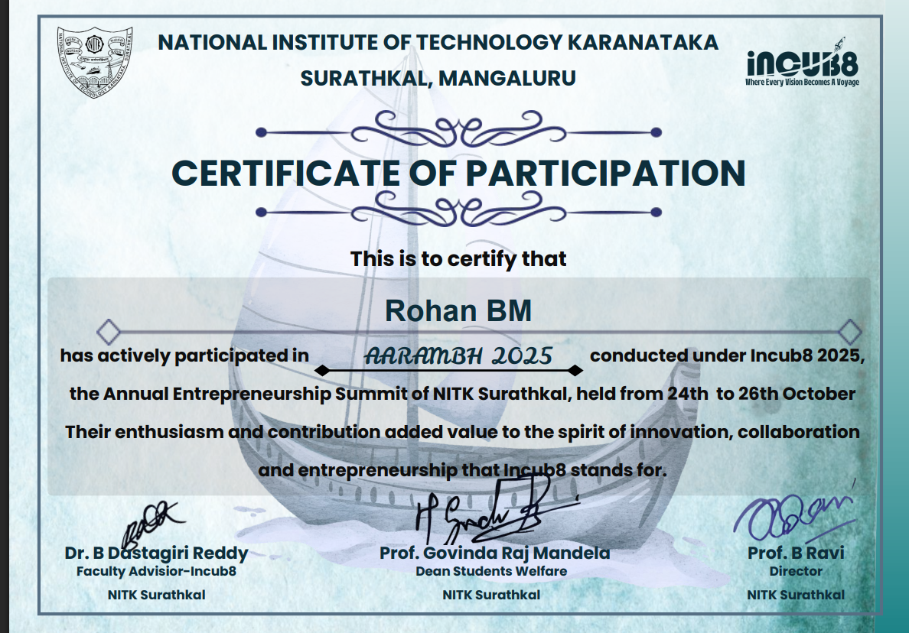
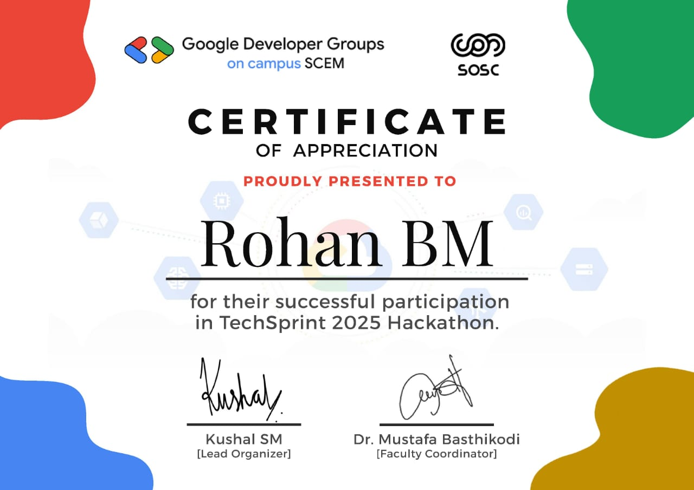

Certificates & Credentials




Successfully selected in the Internal Smart India Hackathon, where I collaborated with a team to develop innovative solutions to real-world problems.
Actively participated in Socio Spark 2k25, an event conducted by the college focused on innovation and entrepreneurship in technology.
Achieved a CGPA of 9.17 in the 1st year BE course, demonstrating strong academic performance and commitment to excellence.
Developed multiple full-stack web applications showcasing expertise in modern web technologies and best practices.
Consistently demonstrated strong problem-solving abilities in hackathons and academic projects with creative and efficient solutions.
Actively participated in team-based projects, contributing to collaborative environments and fostering innovation.